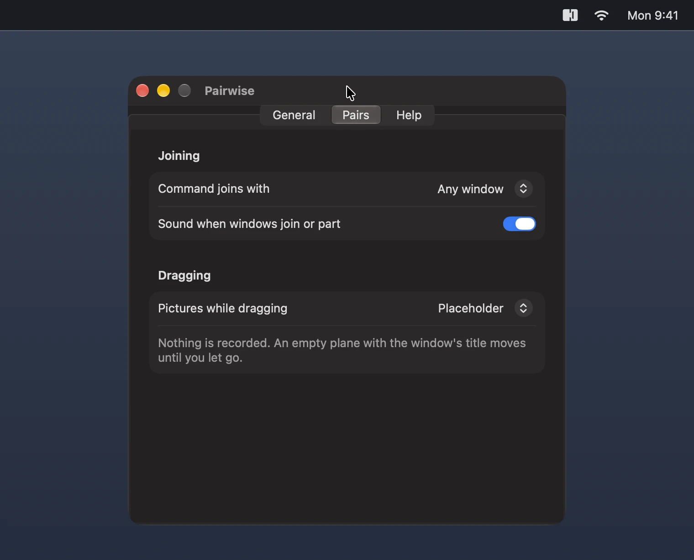

Still and Live take the Screen Recording permission, which Pairwise asks for when you choose one. They capture only the two windows of a pair, and only from the moment you press one of them or their seam until you let go.
The pictures stay in memory, and are not saved or sent anywhere. Pairwise is open source, so you can check this in the code.
